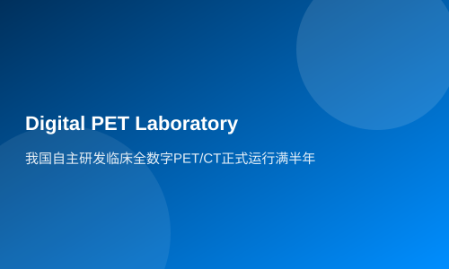

我国自主研发临床全数字PET/CT正式运行满半年
由我国科研团队完全自主研发的临床全数字PET/CT，在湖北省鄂州市中心医院已正式投入运行满半年，目前运行情况良好...
新华社武汉11月20日电（记者梁建强、李伟）由我国科研团队完全自主研发的临床全数字PET/CT，在湖北省鄂州市中心医院已正式投入运行满半年，目前运行情况良好。试运行及正式运行以来，累计检测病例数已突破300人。
据悉，这款临床全数字PET/CT由华中科技大学谢庆国教授带领的数字PET团队研发。团队成员张博介绍，团队经过多年攻关，实现了全数字PET从技术路径、关键材料、核心元器件到系统整机的全部自主研发。
鄂州市中心医院核医学科主任焦次来透露，这款临床全数字PET/CT经过一段时间试运行后，于2021年5月正式投入运行。目前，检查项目主要包括病灶的良恶性鉴别、术前分期、原发病灶查找、肿瘤筛查等方面。相比传统PET，全数字PET设备实现了数字化、模块化，操作方便且易于维护。试运行及正式投入运行以来，累计检测病例数逾300人。
“从应用的效果来看，实现了精准诊断。在恶性肿瘤诊断方面与病理结果高度相符，在肿瘤部位的范围以及转移情况的早期诊断方面，也起到很好的指导作用。”鄂州市中心医院肿瘤科主任金军说。
相关链接